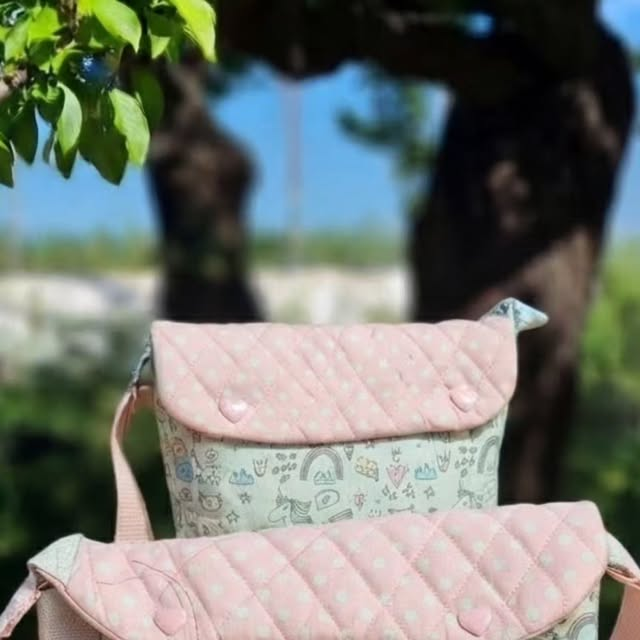

Bolsitos «Pequeños Tesoros»
«Pequeños tesoros para sus grandes aventuras. Acolchados para que sean súper blanditos, con su solapa rosa de lunares, sus botones de corazón y esa tela de unicornios que es pura magia para las más peques.» Hechos a su medida.